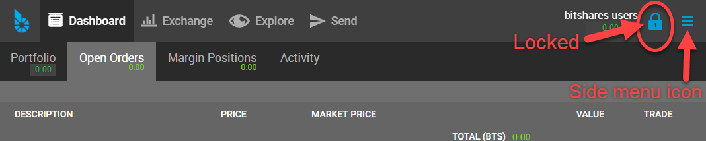
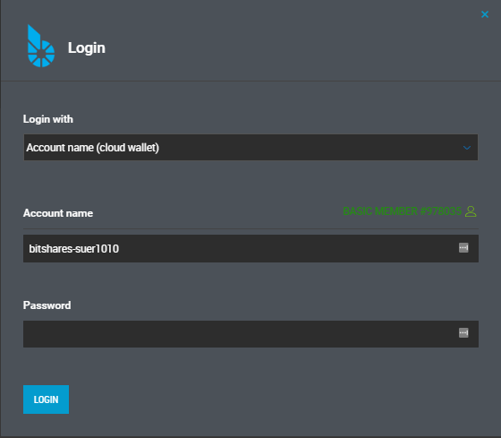
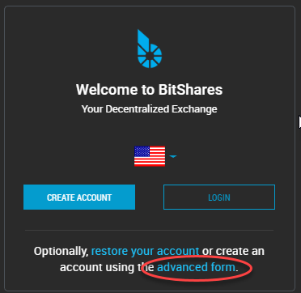
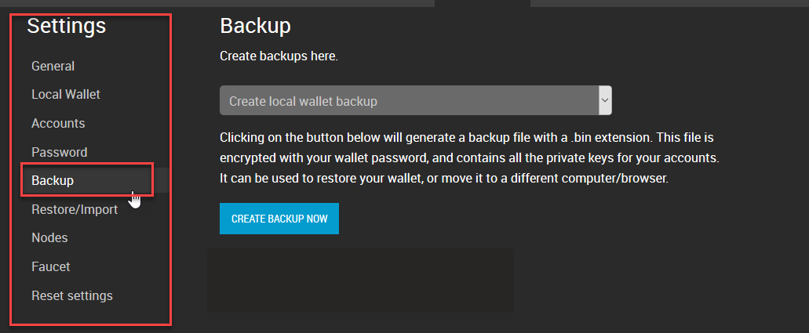
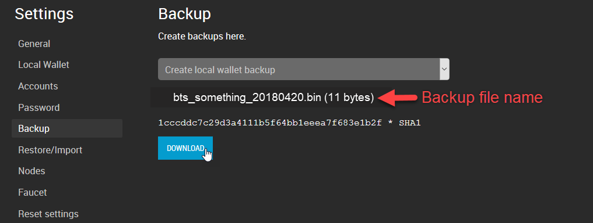
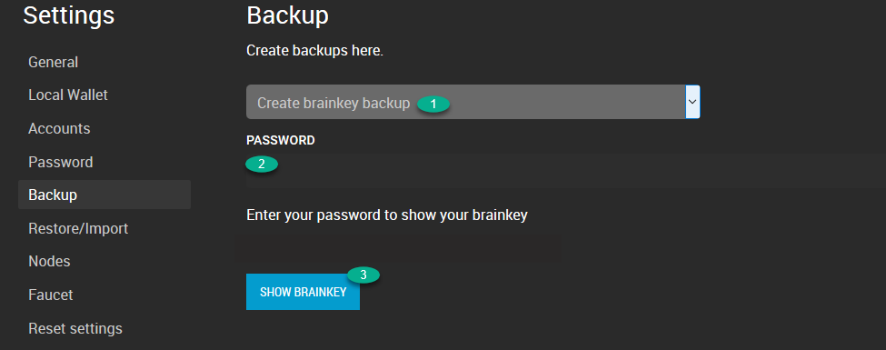
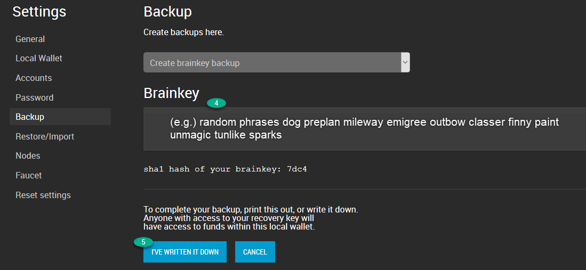
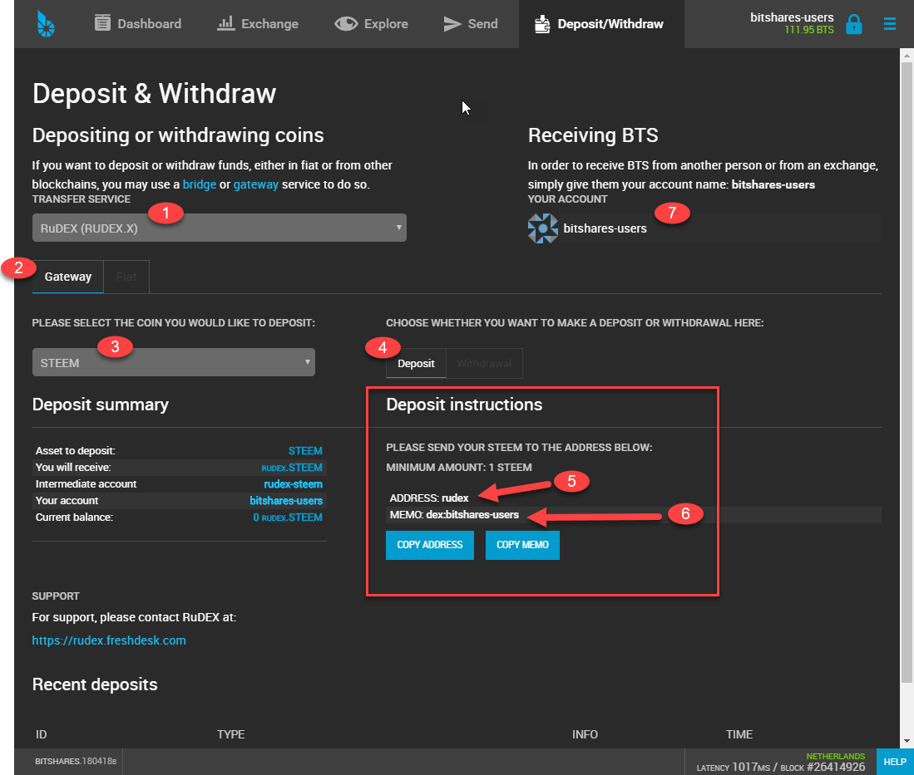
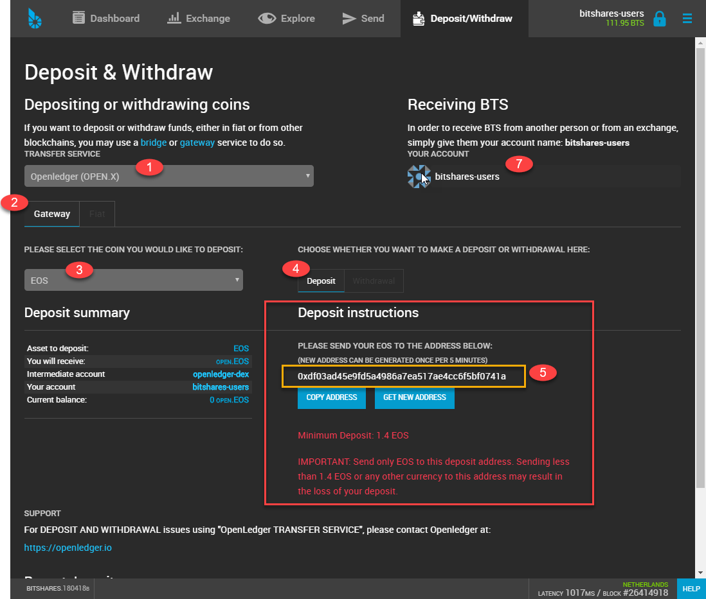

BitShares Documentation¶
Welcome to the BitShares Documentation
Welcome to the documentation portal for the BitShares Blockchain. The content on this page is managed by the BitShares community and is constantly improved.
The purpose of this site is to provide in-depth documentation about the BitShares Blockchain and make it easier for users and developers to leverage the full power of the BitShares Blockchain.
- Development
- New: SimpleGUIWallet
Graphene¶
Welcome to the Graphene Documentation¶
The developers of BitShares formed Cryptonomex to monetize the technology, experience, reputation and good will they accumulated during their first two years of development and operations. Much of that technology is embodied in Graphene™, an industrial strength software platform for deploying third generation cryptographically secure decentralized ledgers known as block chains.
Graphene based systems have orders of magnitude better performance than first-generation Bitcoin-derived systems or even the second generation “Bitcoin 2.0” systems that constitute our current closest competitors. Graphene based systems go beyond mere “checkbook” style payments to offer a broad range of financial services distinguished by their transparency and inherent incorruptibility.
This page documents the Graphene technology built by Cryptonomex. You can see Graphene as a toolkit for real-time blockchains. We separated the documentation into smaller parts for convenience and for the sake of easy location of relevant information.
Recent Updates¶
17/04/04Stress Test results available in bitshares/papers/index16/06/29bitshares/tutorials/distributed-access-hosting16/04/07Getting Started16/03/17integration/traders/index, integration/libraries/index16/03/15bitshares/investor/index, bitshares/investor/claim, bitshares/migration/legacy-blockchain16/03/02bitshares/user/referral-program16/03/01bitshares/tutorials/cli-wallet-usage, bitshares/tutorials/transfer-funds-cli, bitshares/user/voting, bitshares/tutorials/voting16/02/13Huge improvements in the Public API16/02/08bitshares/user/committee, bitshares/tutorials/committee-approve-proposal, bitshares/user/vesting16/02/01integration/merchants/merchant-protocol, Added search to the navigation16/01/19testnet/index, bitshares/tutorials/pm-create-manual, bitshares/user/eba16/01/13bitshares/tutorials/uia-update-manual, bitshares/tutorials/uia-create-manual, bitshares/tutorials/uia-create-gui, integration/network-setup, integration/tutorials/index16/01/12bitshares/user/assets, bitshares/tutorials/uia-create-manual bitshares/tutorials/mpa-create-manual, bitshares/user/assets-faq, bitshares/user/privbta, bitshares/tutorials/publish-feed, bitshares/user/pm, bitshares/tutorials/pm-create-manual, bitshares/tutorials/pm-close-manual
Blockchain Specific Guides¶
The Graphene Technology has been applied to several blockchain already. BitShares 2.0 has been the first application of Graphene technology and you will be able to find almost everything feature implemented in BitShares 2.0. Further blockchains will be added independently.
BitShares 2.0 is a Financial Smart Contracts platform that enables trading of digital assets and has market-pegged assets that track the value of their underlying asset (e.g. bitUSD tracking the U.S. dollar).
Delegated Proof of Stake (DPOS)¶
Delegated Proof of Stake (DPOS) is a new method of securing a crypto-currency’s network. DPOS attempts to solve the problems of both Bitcoin’s traditional Proof of Work system, and the Proof of Stake system of Peercoin and NXT. DPOS implements a layer of technological democracy to offset the negative effects of centralization.
Table of Contents
Background¶
Delegated proof of stake mitigates the potential negative impacts of centralization through the use of witnesses (formally called delegates). A total of N witnesses sign the blocks and are voted on by those using the network with every transaction that gets made. By using a decentralized voting process, DPOS is by design more democratic than comparable systems. Rather than eliminating the need for trust all together, DPOS has safeguards in place the ensure that those trusted with signing blocks on behalf of the network are doing so correctly and without bias. Additionally, each block signed must have a verification that the block before it was signed by a trusted node. DPOS eliminates the need to wait until a certain number of untrusted nodes have verified a transaction before it can be confirmed.
This reduced need for confirmation produces an increase in speed of transaction times. By intentionally placing trust with the most trustworthy of potential block signers, as decided by the network, no artificial encumbrance need be imposed to slow down the block signing process. DPOS allows for many more transactions to be included in a block than either proof of work or proof of stake systems. DPOS technology allows cryptocurrency technology to transact at a level where it can compete with the centralized clearinghouses like Visa and Mastercard. Such clearinghouses administer the most popular forms of electronic payment systems in the world.
In a delegated proof of stake system centralization still occurs, but it is controlled. Unlike other methods of securing cryptocurrency networks, every client in a DPOS system has the ability to decide who is trusted rather than trust concentrating in the hands of those with the most resources. DPOS allows the network to reap some of the major advantages of centralization, while still maintaining some calculated measure of decentralization. This system is enforced by a fair election process where anyone could potentially become a delegated representative of the majority of users.
Rationale Behind DPOS¶
- Give shareholders a way to delegate their vote to a key (one that doesn’t control coins ‘so they can mine’)
- Maximize the dividends shareholders earn
- Minimize the amount paid to secure the network
- Maximize the performance of the network
- Minimize the cost of running the network (bandwidth, CPU, etc)
Pooled Mining as Delegated Proof of Work¶
So how is this different than Bitcoin? With Bitcoin, users must pick a mining pool and each pool generally has 10% or more of the hash power. The operator of these pools is like a representative of the clients pointed at the pool. Bitcoin expects the users to switch pools to keep power from becoming too centralized, but collectively five major pools control the network and manual user intervention is expected if one of the pools is compromised. If a pool goes down then the block production rate slows proportionally until it comes back up. Which pool one mines with becomes a matter of politics.
Reasons to not randomly select representatives from all users¶
- High probability they are not online.
- Attackers would gain control proportional to their stake, without any peer review.
- Without any mining at all, the generation of a random number in a decentralized manner is impossible and thus an attacker could control the random number generation.
Scalability¶
Assuming a fixed validation cost per transaction and a fixed fee per transaction, there is a limit to the amount of decentralization that can take place. Assuming the validation cost exactly equals the fee, a network is completely centralized and can only afford one validator. Assuming the fee is 100x the cost of validation, the network can support 100 validators.

Systems like Nxt and Peercoin will have excessive fees if they intend to allow everyone to be a validator and earn fees at scale. What this means for Nxt and Peercoin is that anyone with less than 1% stake cannot validate profitably unless their fees are higher than our DPOS chain. If these chains assume 100 delegates is too centralized and start promoting they have 1000 validators, then their fees must be 10x those of DPOS. If such a chain grew to be the size of Bitcoin ($10 B) then only those with $1M worth of coin could validate profitably and most would consider that an elite club. If they reduce the minimum stake to be a validator to $1000, then their fees would be 10,000 times higher than DPOS.
Developers of DPOS assume that everyone with less than the amount required to validate won’t participate. Also assumed is a “reasonable” distribution of wealth. It’s clear that unless alternate chains have unusually high fees, there will only be a handful of people with enough stake to validate profitably.
In conclusion, the only way for POS to work efficiently is to delegate. In the case of Nxt, they can pool their stake by some means and ultimately this will end up like DPOS prior to approval voting with a variable number of delegates. Delegates wouldn’t actually receive any income as with mining pools because the validation expenses will consume the vast majority of the transaction fees.
The end result is that decentralization has a cost proportional to the number of validators and that costs do not disappear. At scale, these costs will centralize any system that does not support delegation. This kind of centralization should be designed as part of the system from the beginning so that it can be properly managed and controlled by the users, instead of evolving in some ad hoc manner as an unintended consequence.
Role of Delegates¶
- A witness is an authority that is allowed to produce and broadcast blocks.
- Producing a block consists of collecting transactions of the P2P network and signing it with the witness’ signing private key.
- A witness’ spot in the round is assigned randomly at the end of the previous block
Voting Algorithm¶
How do I get “votes?”¶
- Persuade others to give upvotes to your witness
- When another user gives an upvote to your (and possibly other) delegates
- A user can give an upvote for more than one witness. As a result all upvoted witnesses get a vote
- Convince proxies (that vote on behalf of their followers) to vote for you
Why use only upvotes?¶
- Giving only upvotes, and allowing multiple votes per share, is called Approval Voting, and comes with several advantages over the old delegation voting.
- No downvotes are needed, which not only simplifies usability but also reduces code and complexity.
How are ‘votes’ counted?¶
Once every maintenance interval, all votes are recounted and the corresponding result takes effect.
Is there an anti-vote?¶
Not any more. After discovering emski’s attack the developers decided to use Approval Voting.
Disincentives for Attacks¶
- By choosing not to produce a block, a witness risks getting fired and they lose guaranteed profits in the future.
- A dishonest delegate would only fail to produce a block if they were sure to win something from it
- If a lottery only payed out 50% to a jackpot (giving the other 50% to charity) then the most this dishonest delegate could do is break even.
- Witnesses can’t sign invalid blocks as the block needs confirmation by the other witnesses as well
How many witnesses are securing the network¶
This is totally in the hands of the shareholders. If the majority votes for 50 witnesses, then 50 witnesses will be used. If the shareholders only vote for 20, so be it. The minimum possible witness count is 11.
Sources and Discussions¶
- https://bitsharestalk.org/index.php?topic=5164.msg67657#msg67657
- https://bitsharestalk.org/index.php?topic=5205.0
- https://github.com/BitShares/bitshares_toolkit/wiki/Delegated-Proof-of-Stake
- https://bitsharestalk.org/index.php?topic=4984.0
- https://bitsharestalk.org/index.php?topic=4927.0
- https://bitsharestalk.org/index.php?topic=4869.0
- https://bitsharestalk.org/index.php?topic=4853.0
- https://bitsharestalk.org/index.php?topic=4836.0
- https://bitsharestalk.org/index.php?topic=4714.0
Things you should know¶
For the Starter¶
- Security and Control over accounts and funds: No one can access your funds unless you let them, intentionally, or unintentionally. With the power to be independent from 3rd parties, comes the responsibility to protect what belongs to you.
- Can interact with people directly: With BitShares it becomes possible to interact with people directly without needing to go through a middleman. Hence, BitShares is a platform of free speech that implements a payment platform and exchange for digital goods.
- Fast: Transactions in BitShares are verified and irrevocable in only a few seconds time.
- Decentralized Committee: Decisions that can effect the BitShares ecosystem are made using a on-chain committee voted upon by shareholders. Hence, no single entity can change the deal retroactively.
- Flexible: Protocol upgrades (formerly known as hard forks) can be implemented and executed to improve the BitShares business over time and allow to react on.
For the Investor¶
- Become BTS Holder:
If you buy
BTSeither from a partner exchange or from the DEX, you become a BTS Holder of the BitShares decentralized business and as such can take a cut of its profits and participate in votes for future directions. - Expenses: Vote for expenses of the business and hire workers to do important tasks for BitShares.
- Leaders: Participate in political decisions by voting for committee members that represent your views!
- Protocol upgrades: Improve the technology, integrate new features and adept legal and regulative changes by voting for upgrades.
- Decision making for a profit: Take part in decision finding about fair pricing models for transaction fees to a) increase growth and b) make BitShares profitable for its shareholders
Assets Tokens¶
User Issued Assets (UIAs)
Freely traded tokens created by individuals used for a variety of use-cases, such as stock, miles, event tickets or reputation points.
User Issued Assets (UIAs)¶
BitShares allows individuals and companies to create and issue their own tokens for anything they can imagine. The potential use cases for so called user-issued assets (UIA) are innumerable. On the one hand, UIAs can be used as simple event tickets deposited on the customers mobile phone to pass the entrance of a concert. On the other hand, they can be used for crowd funding, ownership tracking or even to sell equity of a company in form of stock.
All you need to do is click in order to create a new UIA is a few mouse clicks, define your preferred parameters for your coin, such as supply, precision, symbol, description and see your coin’s birth after only a few seconds. From that point on, you can issue some of your coins to whomever you want, sell them and see them instantly traded against any other existing coin on BitShares.
Unless you want some restriction. As the issuer, you have certain privileges over your coin, for instance, you can allow trading only in certain market pairs and define who actually is allowed to hold your coin by using white- and blacklists. Of course, an issuer can opt-out of his privileges indefinitely for the sake of trust and reputation.
As the owner of that coin, you don’t need to take care of all the technical details of blockchain technology, such as distributed consensus algorithms, blockchain development or integration. You don’t even need to run any mining equipment or servers, at all.
So what’s the drawback?
There is a drawback in this scenario, namely, a centralized issuance of new tokens. To some extend, this could be managed by a hierarchical multi-signature issuer account that prevents any single entity from issuing new coins but instead requires a consensus among an arbitrary set of people to agree on any changes to the coin.
Obviously, the regulations that apply to each kind of token vary widely and are often different in every jurisdiction. Hence, BitShares comes with tools that allow issuers to remain compliant with all applicable regulations when issuing assets assuming regulators allow such assets in the first place.
Use Cases¶
- Reward Points
- Fan Credits
- Flight Miles
- Event Tickets
- Digital Property
- Crowd-Funding
- Company Shares
Market-Pegged Assets (MPA)
These SmartCoins track the value of an underlaying asset, such as Gold, or U.S. Dollar. Smartcoins can be created by anyone contracting with the BitShares ecosystem and putting sufficient BTS (at least 175%) into the so called contract for difference as collateral.
Market Pegged Assets (MPAs)¶
A crypto-currency, with the properties and advantages of Bitcoin, that is capable of maintaining price parity with a globally adopted currency (e.g. U.S. dollar), has high utility for convenient and censorship resistant commerce. This can be achieved by BitShares’ market pegged assets (MPA), a new type of freely traded digital asset whose value is meant to track the value of a conventional underlying asset by means of contracts for difference (CFD).
Instead of creating a UIA where the full control over supply is in the hands of the issuer, we can also create a Market Pegged Asset (MPA) and let the market deal with demand and supply. All we need is a fair price and another asset that can be used as collateral.
Why would we need collateral for? Since the issuer of a MPA has no control over the supply, the blockchain protocol deals with increasing and decreasing supply. In order for a user to get some of the new coins, he will need to put collateral into a smart contract (technically, this contract is a contract for difference).
> A simple example would be a MPA that is backed by USD (a stable crypto token within BitShares) that requires a collateral ratio of 200%. Then, in order to get new coin, we can borrow 100 USD worth of new coins by paying 200 USD.
By this, the supply of your coin is increased by 100. But how would it be decreased? The USD are locked in the smart contract and can only be reclaimed if the debt (here, 100 coins) are returned. Returning them will result in the coins being removed from the supply because the are no longer backed by any collateral.
So what for do we need a fair price? Remember that we chose a collateral ratio of 200%? That number tells us how well backed your coins are by the collateral. But what would happen if the value of your coin goes to the moon? Then your collateral ratio will reduce to say 150%. At a certain percentage, the blockchain will automatically trigger so called Margin Calls which will
- Take your collateral (here, USD)
- Sell it in the market to buy back the coin you owe
- Close the contract
- Pay your the residual USD
A fair price thus tells the market what your coin is worth (e.g. traded for on external exchanges) and triggers margin calls if necessary.
But there is more! Everyone that holds your (MPA) coin in BitShares can convert the coin into the backing asset at a fair price. This procedure is called “settlement” and ensures that your MPA is always worth at least the fair price.
In the User Interface, MPAs are easily distinguishable from UIAs in the asset explorer.
SmartCoins¶
BitAssets can be created and owned by anyone on the network. However, those that are owned by the BitShares Committee, are called
SmartCoins. Among these are:
- (Bit)USD
- (Bit)CNY
- (Bit)EUR
- (Bit)GOLD
- (Bit)Silver
Balances in these assets are labeled with USD, CNY, etc., because represent the same value as their underly.
Collateralized Tokens¶
A SmartCoin (synonym for MPA) is a crypto-currency that always has 100% or more of its value backed by the BitShares core currency (BTS), to which they can be converted at any time, as collateral in a CFD.
What makes MPAs unique is that they are free from counterparty risk even though they resemble a CFD backed by collateral. This is achievable by letting the network itself (implemented as a software protocol) be responsible for securing the collateral and performing settlements as will be described in more detail below.
Market Mechanics¶
Each BitAsset has a feed that is provided by the witnesses that indicate a fair price for that asset. This so called Settlement Price or Feed Price is used to margin call positions that borrowed BitAssets and can no longer maintain the minimum collateral ratio (i.e. maintenance collateral ratio). The collateral of these positions is used to buy back the debt from the market automatically and the position will be closed. By these rules, the network enforces the exchange participants to always maintain a collateral that is higher than the minimum requirement. Currently, the minimum required collateral ratio is 175% and can be changed by the witnesses.
Read more about the margin call mechanics before trading.
Exchange Backed Assets (EBA)
This kind of asset is commonly known as I owe you (IOU). It represents the right to withdraw the same amount (minus fees) of a backing asset from a central entity. Often they are issued by a bank, an exchange or an other financial institute to represent deposit receipts.
Exchange Backed Assets (EBA)¶
Exchange Backed Assets represent deposit receipts that are issued by a centralized entity, such as exchanges, banks or other institutes. These can either be interpreted as I owe you (IOUs) or certificates for a deposit at that institute.
From the blockchain perspective, EBA are equivalent to a User Issued Assets (UIAs) that is created and issued by an exchange, bank or financial institute. Hence, it is their responsibility to credit you with the corresponding blockchain token (the EBA) on deposits.
Use Case¶
The most common use case would be a centralized exchange that allows their users to deposit crypto currencies in their wallets. These deposits are usually stored in their own database and the customers internal account balance is matched accordingly. These database balances serve as deposit receipts but obviously require some trust that the database is properly secured against any kind of attacks.
Instead of increasing an internal account balance of a user, new shares of an EBA can be issued to the user on deposits. Since EBAs are blockchain tokens, they can be traded on the decentralized exchange similar to any other exchange.
In order to reclaim his crypto tokens on their native blockchain, the users sends back the EBAs to the institute who then destroy the EBAs and transfer the corresponding asset back to its rightful owner.
Since EBAs are implemented as UIA, you can read more about the underlying technology on the corresponding page - UIA.
Privatized Bit-Assets
A flexible mixture between UIA and MPA that allows 3rd parties to create their own customized MPAs.
Privatized BitAssets¶
Alternatively to regular MPA like the bitUSD, BitShares also offers entrepreneurs an opportunity to create their own SmartCoins with custom parameters and a distinct set of price feed producers.
Privatized SmartCoin managers can experiment with different parameters such as collateral requirements, price feeds, force settlement delays and forced settlement fees. They also earn the trading fees from transactions the issued asset is involved in, and therefore have a financial incentive to market and promote it on the network. The entrepreneur who can discover and market the best set of parameters can earn a significant profit. The set of parameters that can be tweaked by entrepreneurs is broad enough that SmartCoins can be used to implement a fully functional prediction market with a guaranteed global settlement at a fair price, and no forced settlement before the resolution date.
Some entrepreneurs may want to experiment with SmartCoins that always trade at exactly $1.00 rather than strictly more than $1.00. They can do this by manipulating the forced settlement fee continuously such that the average trading price stays at about $1.00. By default, BitShares prefers fees set by the market, and thus opts to let the price float above $1.00, rather than fixing the price by directly manipulating the forced settlement fee.
Fee Backed Assets
An FBA is a token that pays you a fraction of the transaction fees generated by a particular feature that has been funded independent of BitShares.
Fee Backed Asset¶
Existing core features of the BitShares protocol are Market Pegged Assets (MPA) and issuer backed User Issued Assets (UIA). In this proposal, we introduce another type of asset: Fee Backed Assets (FBA).
Feed backed assets allow to propose and fund market based innovation by sharing a cut of future profits generated by this particular innovation with the people that helped fund it. Think of it as a Kickstarter for features. Hence, if people can profit from successful features in the form of fees then it can help the BitShares ecosystem to become more adaptable over time as it promotes innovation and can pay for its development.
If you have any features in mind that require new kind of transaction on the blockchain, you can code that feature and fund it with an FBA.
Feed Backed Assets have been proposed in BSIP-0007.
Prediction Market Asset
A prediction market is similar to a MPA, that trades between 0 and 1, only. After an event, a price feed can be used to determine which option to take and participants can settle at this price.
Prediction Markets¶
A prediction market is a specialized BitAsset such that total debt and total collateral are always equal amounts (although asset IDs differ). No margin calls or force settlements may be performed on a prediction market asset. A prediction market is globally settled by the issuer after the event being predicted resolves, thus a prediction market must always have the global_settle permission enabled. The maximum price for global settlement or short sale of a prediction market asset is 1-to-1.
Table of Contents
Note
In the following, we denote a positive outcome as a predication market that resolves to true (i.e. a price feed of 1) and a negative outcome to resolve to false (i.e., a price feed of 0)
If the bet resolves to true (i.e. a price feed of 1), then the PM-asset can be settled release the collateral to the holder of the asset.
If, instead, the bet resolves to false (i.e. a price feed of 0), then those that sold the PM-asset on the market and went short, made a profit since it PM-asset became worthless.
Creation¶
Prediction markets are assets that trade freely and can be borrowed from the market at a 1:1 ratio with the backing asset (which could be any other asset, including BTS, USD, GOLD).
Betting¶
A user can take either bet on a positive outcome, or a negative outcome. We here show how this works, technically.
Betting for a Positive Outcome¶
If you are confident that the bet will resolve positive, you want to hold that particular PM-asset since it allows you to settle it for it’s collateral on a 1:1 basis.
In order to get hold of those tokens, you can put a buy order for them at any price (between 0 and 1) and wait for it to be filled, or buy at market rates. By this technique, a user can pre define at which odds to buy shares.
For instance, if you think that the bet resolves positively at a probability of 80%, you can put your buy order at a price of 0.8. If the bet resolves positively (price feed of 1), then you can settle your shares at 1 and make a 20% profit.
If you can buy tokens at a price of 0.2 (i.e. market participants think it is unlikely to resolve positively), then you could make 80% profits at a risk of loosing with 80% probability.
After closing of the bet, a user can claim his profits by settling his borrow position and taking out the collateral:
Settlement in the CLI wallet:
>>> settle_asset <account> <amount> <symbol> True
Borrowing in the GUI wallet: A settlement button is available when hovering the asset in your account’s overview.
Betting for a Negative Outcome¶
In order to bet for a negative outcome (bet resolves to false with a price feed of 0), you need to sell the tokens. In order to get them, you should not buy them at the market, but instead borrow them from the network by paying collateral at a 1:1 ratio.
For example, in the PM.PRESIDENT2016 if you want to bet on a negative outcome with 100k BTS, you can borrow 100k PM.PRESIDENT2016 by paying 100k BTS to the network.
Note
Since PM-Assets can technically be pegged by any other asset, you may need to pay USD (or anything else) instead of BTS.
Once you borrowed the token, you can sell them at any price between 0 and 1. If you thing the probability of a negative outcome is 20%, you should consider selling your tokens at 0.2.
If the bet resolves negatively (price feed of 0), your debts is worth debt = amount * price = 0 BTS, you can reclaim your collateral at zero cost, and get to keep 20% profits from selling the token at 0.2. If instead the bet resolves positively and you sold all tokens, you cannot close your borrow position to redeem your collateral. However, your total loss is reduced by 20% for selling the tokens at the market.
If, by the end of the bet, you still have some of the tokens left, you can of course close your borrow position partly and redeem the corresponding percentage of the collateral.
Resolving¶
A price feed needs to be published for the prediction market by the issuer or feed producer. It is essentially a global settlement which will set the parameters of the asset such that the holders of the asset can settle at the outcome of the bet (0, or 1). The details are shown in the guide pm-close-manual (ref: dev.bitshares.works material)
Blockchain Governance¶
The blockchain can and needs to be governed by elected individuals and businesses. The so called committee (a set of many individuals), can change blockchain parameters such as block size, block confirmation time and others. Most importantly, though, they deal with the business plan of the blockchain and tweak costs and revenue streams (mainly transaction fees). In contrast to most existing crypto currencies, we re not hoping for a fee market to grow but instead have the committee members deal with fine-tuning of the business plan. Fortunately, the BTS Holders have the final say to approve the executive committee.
Hence, we see businesses competing for seats in the committee to define blockchain parameters.
If business ideas requires certain blockchain parameters or a particular set of fees to be profitable, there are several options:
- Argue with shareholders to approve committee members that vote in their favor
- Get elected as committee member by showing that the business is worth being available in that particular chain
- Deploy the innovative business idea as a smart contract on the blockchain and have the shareholders approve the upgrade in combination with Fee Backed Asset that pays future fees of the smart contract to holders of that asset (Fee Backed Asset)
Community Memberships¶
Table of Contents
BTS Holders¶
In contrast to most crypto-currencies, BitShares does not claim to be a currency but rather an equity in a decentral autonomous company (DAC). As a result, the market valuation of BitShares is free floating and may be as volatile as any other equity (e.g. of traditional companies).
Every entity hold the core token (BTS) is considered a BTS Holder of the BitShares decentralized company.
Nonetheless, BTS tokens can be used as collateral in financial smart contracts such as market pegged assets and thus back every existing smartcoin such as the bitUSD.
Committees¶
Since Bitcoin struggled to reach a consensus about the size of their blocks, the people in the cryptocurrency space realized that the governance of a DAC should not be ignored. Hence, BitShares offers a tools to reach on-chain consensus about business management decisions.
The BitShares blockchain has a set of parameters available that are subject of BTS Holder approval. BTS Holders can define their preferred set of parameters and thereby create a so called committee member or alternatively vote for an existing committee member. The BitShares committee consists of several active committee members.
The BitShares ecosystem has a set of parameters available that are subject of BTS Holder approval. Initially, BitShares has the following blockchain parameters:
- fee structure: fess that have to be paid by customers for individual transactions
- block interval: i.e. block interval, max size of block/transaction
- expiration parameters: i.e. maximum expiration interval
- witness parameters: i.e. maximum amount of witnesses (block producers)
- committee parameters: i.e. maximum amount of committee members
- witness pay: payment for each witnesses per signed block
- worker budget: available budget available for budget items (e.g. development)
Please note that the given set of parameters serves as an example and that the network’s parameters are subject to change over time.
Additionally to defining the parameters any active witness can propose a protocol or business upgrade (i.e. hard fork) which can be voted on (or against) by BTS Holders. When the total votes for the hard fork are greater than the median witness weight w then the hard fork takes effect.
Witnesses¶
In BitShares, the witnesses’ job is to collect transactions, bundle them into a block, sign the block and broadcast it to the network. They essentially are the block producers for the underlying consensus mechanism.
For each successfully constructed block, a witness is payed in shares that are taken from the limited reserves pool at a rate that is defined by the BTS Holders by means of approval voting.
Workers / Budget Items¶
Thanks to the funds stored in the reserve pool, BitShares can offer to not only pay for its own development and protocol improvement but also support and encourage growth of an ecosystem.
Payouts¶
A blockchain parameter (defined by BTS Holders through the committee) defines the daily available budget. No more than that can be paid at any time to all workers combined.
The daily budget is distributed as follows:
- The available budget is taken out of reserves pool.
- The budget items are sorted according to their approval rate (
Pro - Con) in a descending order. - Starting at the worker with the highest approval rate, the requested daily pay is payed until the daily budget is depleted.
- The worker with the least approval rate that was paid may receive less than the requested pay
Hence, in order to be successfully funded by the BitShares ecosystem, the BTS Holders approval for your budget item needs to be highly ranked.
Since the payments for workers from the non-liquid reserve pool result in an increased supply of BTS, these payments are vesting over a period of time defined by BTS Holders.
Pseudo Workers¶
Three types of pseudo workers exist that are not primarily used to for salary.
Polling Workers¶
A worker proposal can be used to poll the BTS Holders for an opinion. Those workers usually have no or very small pay. Additionally, they come with a proposal, recommendation or other topic on which BTS Holders can publish a binary opinion (pro, or contra).
Refund Worker¶
This worker is used to set an approval limit for worker proposals and their payment by simply refunding his payment/salary to the reserve pool. If its amount of daily pay is as large as the daily available funds, and the worker has highest approval among all worker proposals, all funds will be returned to the reserves and no one will be payed. If, however, an other worker proposal has more votes than the refund worker, the proposal gets paid its salary, and the rest is return.
Decentralized Exchange (DEX)¶
The decentralized exchange (further denoted simply as the DEX) allows for direct exchange of digital goods traded in the BitShares ecosystem.
A decentralized exchange has a very particular set of advantages over traditional centralized exchanges and we would like to address some of them briefly below. Although the BitShares DEX comes with all of them, it is up to the reader and customer to leverage those features in full or only partially.
- Separation of Powers: There is no reason why the same entity needs to be responsible for issuing IOUs and for processing the order book. In BitShares, order matching is performed by the protocol, which is unaware of implications concerning the involved assets.
- Global Unified Order Book: Since BitShares is global, anybody with an internet access can use the DEX for trading. This brings the world’s liquidity to a single order book for decentralized trading.
- Trade Almost Anything: The BitShares DEX is asset agnostic. Hence you can trade at any pair. While some pairs may end up with low liquidity, such as SILVER:GOLD, other pairs such as USD:EUR for FOREX trading will see huge volume.
- No Limits: The BitShares protocol is unable to limit your trading experience.
- Decentralized: The DEX is decentralized across the globe. This not only means that there is no single point of failure, but it also implies that the BitShares exchange is open for trading 24/7 because it’s always daytime somewhere.
- Secure: Your funds and trades are secured with industry-grade elliptic curve cryptography. No one will be able to access your funds unless you let them. To further strengthen the security, we allow our customers to setup escrow and multi-signature schemes.
- Fast: In contrast to other decentralized networks, the BitShares DEX allows for real-time trading and is only limited by the speed of light and the size of the planet.
- Provable Order Matching Algorithm: What makes the BitShares DEX unique is the provable order matching algorithm. Given a set of orders, you will always be able to provably verify that these orders have been matched properly.
- Collateralized Smartcoins: One of the biggest features of BitShares are its smartcoins such as bitUSD, bitEUR, bitCNY, and others. For the sake of convenience, these assets are denotes simply as USD, EUR, CNY, etc. in the wallet. These digital tokens represent the same value as their underlaying physical asset. Hence 1 USD in this wallet is worth $1 and can be redeemed as such. Any of these tokens is backed by BitShares’ company shares (BTS) being locked up as collateral and being available for settlement at its current price.
Trading¶
This page will give a very quick introduction on how to interpret the terms used by the DEX and how trading pairs are presented.
Table of Contents
Pairs¶
In BitShares, almost any asset can be traded with all other assets. Once we have picked two assets, we usually refer to a market pair. For instance, we can trade USD against EUR in the USD:EUR pair.
For sake of consistency, we will use the generalized terms base and quote such that pairs are represented as:
quote : base
and for instance with base being USD and quote being EUR, denote the EUR:USD pair.
Market Overview¶
The market overview that can be access via the explorer, shows a set of predefined default markets. Note that the list of default markets may vary depending on the wallet provider. Further markets can be added using the Find Markets tab. Adding a Star to your favorite markets will make it appear in your list of default markets.
Market¶
When entering a market, you will presented with either the market depth
… or the price chart depending on your settings.
You can switch between your views by pressing the corresponding button as highlighted below.
Order Books¶
The order book consists of an ask and a bid side. Since trading pairs do not have a preferred orientation, and can be flipped, the following table shall give an overview of ask/bid and the corresponding buy/sell operations for each side:
| Side | Sell | Buy |
|---|---|---|
| Ask | quote | base |
| Bid | base | quote |
Obviously, what is on the bid side of the USD:EUR pair will be on the ask side on the EUR:USD pair. Of course prices are internally represented as fractions, and thus results in both pairs being identical.
Trading¶
To place a trading order, it is required to fill the form on either the ask or the bid side (respectively, buy or sell side). You will need to define a price and an amount to sell/buy. The cost for this order will be calculated automatically. Note that there will be an additional fee required to actually place the order.
Once the order is filled (i.e. someone sold/bought your offer), your account will be credited by the corresponding asset.
Unfilled orders can be canceled at any time.
Order Matching¶
BitShares 2.0 matches orders on a first-come, first-serve basis and gives the buyer the best price possible up to the limit (also known as “walking the book”). Rather than charging unpredictable fees from market overlap (as has been in the previous network), the network charges a defined fee based upon the size of the order matched and the assets involved. Each asset issuer gets an opportunity to configure their fees.
The decentralized exchange (DEX) of BitShares has a similar look&feel as traditional centralized exchanges. However, trading in the DEX can have many different appearances, depending on what user-interface is used. We here describe the user interface of the official wallet.
Playing Orders¶
Orders can be placed in the same way as everywhere else, by providing
- the amount to buy/sell
- the price at which to buy/sell
Fees¶
In contrast to other exchanges, BitShares asks for a tiny flat fee for placing an order. This fee can be payed in USD, BTC, or GOLD and is independent of the actual assets that are traded.
If you cancel an order that has not been fully or partially filled, 90% of the fee will be payed back to your account. However, this chargeback will be in BTS and not in the asset you have originally paid the fee in.
Short Selling BitAssets¶
In order to increase your exposure to BTS and offer liquidity to BitAssets, such as USD, EUR, GOLD, etc., you can go borrow this bitAsset from the network and sell it short. We will here briefly describe the procedure.
Table of Contents
Borrowing¶
The BitShares network is capable of issuing any amount of any BitAsset and lend it out to participants given enough collateral.
- settlement price: The price for 1 BTS as it is traded on external exchanges.
- maintenance collateral ratio (MCR): A ratio defined by the witnesses as minimum required collateral ratio
- maximum short squeeze ratio (MSQR): A ratio defined by the witnesses as to how far shorts are protected against short squeezes
- short squeeze protection (SQP): Defines the most that a margin position will ever be forced to pay to cover
- call price (CP): The price at which short/borrow positions are margin called
Margin Call¶
The BitShares network is capable of margin calling those positions that do not have enough collateral to back their borrowed bitAssets. A margin call will occur any time the highest bid is less than the call price and greater than SQP. The margin position will be forced to sell its collateral anytime the highest offer to buy the collateral is less than the call price (x/BTS).:
SQP = settlement price / MSQR
call price = DEBT / COLLATERAL * MCR
The margin call will take the collateral, buy shares of borrowed bitAsset at market rates up to the SQP and close the position. The remaining BTS of the collateral are returned to the customer.
Read more about the margin call mechanics before trading.
Settlement¶
Holders of any bitAsset can request a settlement at a fair price at any time. The settlement closes the borrow/short positions with lowest collateral ratio and sells the collateral for the settlement.
Note, that there is a maximum daily settlement volume (currently 2%) defined by the committee to prevent exploitation via external price movements.
Selling¶
After burrowing bitAssets, they can be sold free at any of the corresponding markets at any price a buyer is willing to pay. With this step, the short-selling is now complete and you are short that particular bitAsset.
Updating Collateral Ratio¶
At any time, the holder of a borrow/short position can modify the collateral ratio in order to flexibly adjust to market behavior. If the collateral ratio is increase, an additional amount of BTS is locked as collateral, while reducing the collateral ratio will require an amount of the corresponding BitAsset to be payed back to the network.
Covering¶
To close a borrow/short position, one must hold the borrowed amount of that particular bitAsset to hand it over to the BitShares network. After that, the BitAssets are reduced from the corresponding supply and the collateral is released and given back to its owner.
Discussion¶
Shorts can pick their place in line for settlement. Think of it this way, if you fall in the bottom 2% of shorters by collateral you have been given notice of potential margin call since only 2% can be settled, daily. This is like any other market where they give you 24 hours to add collateral. If someone is short and doesn’t want to meet the new higher collateral limits then they can either cover on their own terms or add collateral.
By giving 24 hours shorts have an opportunity to cover prior to any price manipulation by big players.
If there is a 10% premium on BitUSD relative to the feed, then the attacker would have to increase reported price feed (value of BTS) by 10% just to get the force-settlement price to equal the previously fair value for BitUSD. They would have to push beyond 10% before the short starts taking a loss relative to a voluntary cover. All savvy market participants would be aware of a large force-settle order and would therefore reset the manipulator making it much harder to manipulate the price. In effect, price manipulation represents “free money” to those who know it is going on.
Look at it another way, someone enters a large force-settlement order it becomes an opportunity for the shorter to do reverse manipulation. It is a tug of war where both sides (short and long) have equal opportunity to manipulate the market in their favor. They go to battle and the result is just the fair market price at that point in time. It is not a guaranteed win for the potential manipulator.
Margin call mechanics¶
The mechanics of a margin call in Bitshares are currently poorly understood, so I’d like to try to clarify a little by using examples from the USD:BTS market. I think part of the current confusion lies in people talking about the same market but using different market directions, ie. USD:BTS or BTS:USD, so terms like above/below don’t mean the same thing to different people. I will only use USD in these examples, but USD can be replaced by any bit asset in this context. I prefer to use the USD:BTS market direction, so these examples will have prices in BTS/USD.
Table of Contents
What is a margin call?¶
A margin call is the market forcing you to sell your collateral in order to buy enough USD to close your position. In the USD:BTS market a margin call is equivalent to a bid: it is an order to buy USD for BTS.
A margin call will happen because the price has increased to the point where your collateral is insufficient with respect to the current collateral requirements of the Bitshares market rules. The required collateral is a tuneable parameter in Bitshares, set by the maintenance collateral ratio (MCR) which is maintained by the feed producers (i.e., the witnesses).
How is the call price calculated?¶
As mentioned above the call price of a margin position depends on the MCR and the amount of debt and collateral in your position. It is independent of the price feed (settlement price). As an example, say you have opened the following position:
- Debt:
10 USD - Collateral:
10000 BTS - MCR is
1.75
The call price of your position is 10000 BTS / (10 * 1.75 USD) = 571.429 BTS/USD.
How is the collateral ratio (CR) calculated?¶
The collateral ratio depends on the feed price (settlement price). Taking a feed price of 300 BTS/USD and building on the above example with 10 USD debt and 10000 BTS collateral:
- CR:
(10000 BTS / 300 BTS/USD) / 10 USD = 3.33
Execution Conditions¶
When will a margin call happen?¶
This is where it gets complicated. Margin Call are only possible if the feed price is below your call price. A margin call will happen whenever the squeeze protection price goes above the call price of your position. To better understand how this works, let’s go back to our margin position and look at collateral ratios:
Say we have the following:
- Debt:
10 USD - Settlement price:
300 BTS/USD - CR:
1 - Collateral is therefore
3000 BTS
This is also known as the Black Swan level, and we want to perform a margin call before the collateral ratio goes this low. This is why we have the Maintenance Collateral Ratio (MCR), to enforce a buffer zone before a position goes into Black Swan territory. So if we apply the MCR of 1.75 to this position:
- Debt:
10 USD - Settlement Price:
300 BTS/USD - CR:
1.75 - Collateral is therefore
3000 BTS * 1.75 = 5250 BTS
This is much safer, there is a bit of margin for the position to be closed before going into Black Swan levels. Since in our example, the USD requires 1.75 ratio, the call price of this position is now exactly equal to the feed price of 300
BTS/USD.
- Call price:
5250 / (10 * 1.75) = 300 BTS/USD
The remaining question then is, at what point should we force the position to attempt to close itself? This is where the SQPR comes in. Let’s look at two scenarios, SQPR of 1.1 and SQPR of 1.5:
** SQPR of 1.1 **¶
- Settlement price:
300 BTS/USD - SQPR:
1.1 - Squeeze Protection Price (SQPP):
330 BTS/USD
In this case, any margin position that has a call price below 330 BTS/USD will be forced to settle, and therefore be added to the orderbook as an order to buy USD for BTS.
** SQPR of 1.5 **¶
- Settlement price:
300 BTS/USD - SQPR:
1.5 - Squeeze Protection Price (SQPP):
450 BTS/USD
In this case, any margin position that has a call price below 450 BTS/USD will be forced to settle, and therefore be added to the orderbook as an order to buy USD for BTS.
Discussion¶
Another way of looking at this is by looking at the Collateral Ratio of the position. If we want to stay at or above the squeeze protection price, what is the required collateral ratio? Let’s do the math:
- Settlement Price:
300 BTS/USD - MCR:
1.75 - SQPR:
1.1 - Debt:
10 USD - Call price:
CP = SQPP = 300 * 1.1 = 330 BTS/USD - Collateral =
(10 USD * 1.75) * 330 BTS/USD = 5775 BTS
The collateral ratio of this position is (5775 BTS / 300 BTS/USD) / 10 USD = 1.925.
This is equivalent to the MCR
- SQPR:
1.75 * 1.1 = 1.925.
In other words, in order to stay safe and not be margin called, the margin
position must maintain a collateral ratio higher than MCR * SQPR.
- Safe position:
CR > MCR * SQPR
At what price will the margin call execute?¶
This is the part I believe is most misunderstood, so I will use some screenshots of a fictional USD:BTS market to explain. We will use the following parameters:
- SQPR:
1.2 - MCR:
1.75 - SQPR * MCR:
2.1 - Settlement price:
300 BTS/USD - Squeeze protection price:
300 * 1.2 = 360 BTS/USD - Debt:
10 USD - Collateral:
5687.5 - CR:
1.896 - Call price:
325 BTS/USD
From what we’ve seen above, it’s clear that this position should be margin
called: it has a CR of 1.896 which is well below the safe ratio of 2.1.
It will therefore get added to the order book as a bid to buy USD like this:

The margin called order will buy any USD priced in the range 325-360 BTS/USD. The squeeze protection price acts as a price ceiling, meaning the forced margin order will not execute at a very high price in an illiquid market: it is protected from high prices by the SQPR.
Margin calls only execute in the range [Call Price - SQPP]¶
A margin call will occur any time the lowest ask is higher than the call price and lower than the SQPP. This has several consequences, as we will see below. It can create some very strange situations, and also force the margin called orders to “buy high”.
Consequence #1: Asks below the call price prevent margin calls from executing
Because margin calls only execute in the range Call Price - SQPP, if there is a sell order for 5 USD at 315 BTS/USD in this market, the call order will not use it, which makes the market look like this:
If a second sell order of 2.5 USD were added at 345 BTS/USD, the margin called order would still not buy any USD because of the “blocking” sell order at 315 BTS/USD:

If the order at 315 BTS/USD were to be removed, either from being canceled or from being filled, the order at 345 BTS/USD would instantly get filled by the margin called order, and the margin called position would have a reduced debt of 10 - 2.5 = 7.5 USD:

Consequence #2: Margin calls cannot “buy cheap” As we’ve seen above, unless the settlement price goes above the call price of the position, forced margin calls always buy at a premium relative to the settlement price. Even if there are sell orders available at or near the feed price, the margin called orders will not be matched with those sell orders if their call price is higher than the price of those sell orders.
Investor Guide¶
Note
This guide is still under construction. Please excuse if what you are searching for is not yet available.
The investor guide serves as an entry point for existing and potential investors in the BitShares ecosystem. We here merely discuss the BTS token as well as investment opportunities available within BitShares itself and deliberately do not advertise 3rd party businesses. Please be reminded that this is an information platform and thus we do not give investment advice.
Claim your Investment¶
You are considered as a AngelShare holder if you have donated BTC or BTS to one of these addresses:
- BTC:
1ANGELwQwWxMmbdaSWhWLqBEtPTkWb8uDc - PTS:
PaNGELmZgzRQCKeEKM6ifgTqNkC4ceiAWw
There is also an AngelShare Explorer specifically for these donations
AngelShares have been gifted 50% of the initial BTS shares. The other 50% went to AngelShares, the other went to holders of PTS.
Claiming your Stake¶
In order to claim your BTS, you need to look in your bitcoin wallet and search for transactions the the above mentioned address. The keys that correspond to the inputs of that transaction are what you need to obtain your BTS (FAQ ).
If you have located the private keys (in wallet import format - WIF), you can safely import them into your BitShares account using the Import Keys tools in the Wallet Management Console of your BitShares wallet.
Create a BitShares Wallet¶
Table of Contents
Terminology¶
In this section, we want to describe Terminologies and guide you to create and register your BitShares Account.
Wallet
Wallets interacts with the blockchain to process accounts and funds functionalities. Users register to create a single wallet. The single wallet can carry many accounts. Users who have a lifetime membership (LTM) can register multiple accounts in parallel; all of them are stored in a single wallet. Also, users can create multiple wallets to organize their accounts properly.
Accounts
In BitShares, you can create own unique account name, so, you can remember easily. And you will use the account name to communicate (e.g. Send fund) with other BitShares account users (BTS Holders) like an email address. The advantage of using account name is that people can identify you by using a readable and memorable word instead of cryptographic addresses.
Each user has at least one account that can be used to interact with the blockchain. The account can be seen as a single banking account with an individual balance, transaction history, etc. Since these accounts are registered on the blockchain and are open to the public, we recommend to pick a pseudonym to achieve some privacy.
Keys
Keys refer to the cryptography used to secure access to your account and funds. It is of importance to prevent others from gaining access to these keys.
BitShares has owner, active and memo keys. And each key has public key and private key. It’s important to know that Owner permission has administrative powers over the whole account. Active Permission is considered as an “online” permission that allows to access funds and some account settings.
Light wallet or Web wallet?¶
Before we create a wallet, let’s check what type of wallet you can have as your BitShares wallet. Quick check the below chart.

Did you find out which type of wallet you want to have?
- If you want to install Light Wallet (BitShares UI), download BitShares UI Releases file and install it to your machine.
- This does not mean you will have a Local wallet.
- If you want to use Web Wallet, go to this link (https://wallet.bitshares.org).
Create an Account¶
In this section, you will create a Cloud wallet.
We use the term Cloud Wallet, but technically nothing is stored in the cloud. We call the Cloud Wallet because you can use your credentials (username and password) from any web browser at any time to gain access to your account.
Welcome BitShares - Create Account & Login form

Steps¶
- 1.Click [CREATE ACCOUNT]
- 2.Type in [ACCOUNT NAME]. You can create your unique BitShares account name.
- 3.Set a password. Copy and use a GENERATED PASSWORD
- 4.Type or paste your password to confirm.
- 5.Check the check boxes. Make sure you read before you check!
- 6.Click [CREATE ACCOUNT]
Before you submit, check your password one more time if you saved the correct one.
ONLY you can open your wallet again. No one can help. Do not lose it!
- 7.Click [SHOW ME MY PASSWORD] and double check if you have a correct password.
- 8.Click [OK,TAKE ME TO THE DASHBOARD]

- Click the top menu [Dashbord] if it did not open.

Now, you have a BitShares Cloud Wallet. Before you fund to your account, let’s login to make sure if you have a correct password.
Login¶
Click a Locked Key icon in the top right corner to open a login form.
Cloud Wallet Login form¶
If you followed the above steps to create a BitShares account, you have a Cloud Wallet as a default wallet.
On the Login form, you can see which wallet Login form for. (i.e., Login with: Account name (cloud wallet))
If you logged in successfully, you would find a Unlocked Key.

Advanced: Create an Account¶
In this section, you will create a Local Wallet.
If you have a Cloud Wallet, you can access your wallet from any browsers. However, the Local Wallet, you can only access your funds from the same computer and web browser that you have used to register and create your account.
The Local wallet requires you to create a backup file to manage your account and funds. The backup file can be used to move
Steps¶
- 1.Click [advanced form]
- 2.Type in [ACCOUNT NAME]. You can create your unique BitShares account name.
- 3.Set a password. Create own strong password.
- 4.Type or paste your password to confirm.
- 5.Click [CREATE ACCOUNT]
> If this is yore first account, a faucet will pay the registration fee for you!

> Your Web Browser is your Wallet: Please read the information below.

- Click [CREATE BACKUP NOW]

It’s extremely important you to create a backup of your account and keep a safe place.
- Click [DOWNLOAD] to save a backup (.bin) file.
Congratulation, you’re ready!
BitShares Wallet Features¶
Quick Review Wallet Options¶

| Item name | note | |
|---|---|---|
| 1 | Dashboard | The Wallet Portfolio, Open Orders, Margin Positions, and Activity information |
| 2 | Exchange | BitShares Exchange, Trading information |
| 3 | Explore | BitShares Live Blockchain, Assets, Accounts, Witnesses members, Committee members, Markets, and Fee Schedule |
| 4 | Send | Opens a Send form. You can send funds to other BitShares Account Holders |
| 5 | A BitShares account name | A account name that the data shows on a Dashboard page |
| 6 | Key icon | By click, opens a login form. Locked/Unlocked Key icon shows if you’ve logged in the account currently |
| 7 | Side Menu icon | Side Menu icon opens the wallet other menus in a dropdown list |
| 8 | Asset Total | Currently showing in a Dashboard Total Assets |
| 9 | BitShares Wallet Version | The Release Version of BitShares UI Wallet |
| 10 | Latency | The delay of Network connection |
| 11 | Server Node name | A server node name that you are connecting |


Backups and Restore your Wallet¶
Table of Contents
> If you use a Cloud Wallet, you do not need to create a backup. You do not have the option also.
Create Local Wallet Backup¶
It is recommended to make regular backups of your Local wallet. Please note that in order to recover from a backup you will also need to provide the passphrase (password) because backups are encrypted. If you lose your wallet backup file or your passphrase, you will not be able to access any of your funds again.
You are the only individual that has access to your account and funds, it is your responsibility to make a secure backup of your registered Local wallet account.
Backup Types¶
There are three types of backups.
| type | |
|---|---|
| Create local wallet backup | create a Binary File (.bin) |
| Create brainkey backup | give you long random phrases. You need to write down. |
| Create favorites backup |
How to Create a backup (.bin) file¶
- Open a Side menu and select [Settings]
- In [Settings], select [Backup].
- Make sure the backup type is Create local wallet backup
- Click [CREATE BACKUP NOW]
- Check your backup file name (e.g. bts_somrthing_20180420.bin)
- Click [DOWNLOAD]
Store this backup in at least two secure locations only accessible by you
 About the Brain Key¶
The brain key is used as source for all cryptographic keys generated in the wallet. If you have it secured, you will be able to regain access to your accounts and funds (unless the access keys have been changed)
How to Create a Brainkey backup (Advanced User Only)¶
- Open a Side menu and select [Settings]
- In [Settings], select [Backup].
- (#1) Make sure the backup type is Create brainkey backup
- (#2) Type in a password
- (#3) Click [SHOW BRAINKEY]
- (#4) Write down Brainkey (i.g. very random long phrases)
- (#5) Click [I’VE WRITTEN IT DOWN]
Write it down!! Anyone with access to your recovery key will have access to funds with in the local wallet.
 Restore / Import¶
We assume you have created a backup file (.bin) and use a Local wallet.
Restore / Import Options¶
| option | |
|---|---|
| Restore from a backup file (.bin) | restore from a backup file and a password |
| Import a private key | import Private keys to a Local wallet. The imported keys will be saved in the bin file. If this happens, you cannot rely on the brainkey for backup after that. |
| Import a BTS 0.9.3c key export file (.json) | |
| Restore using a local wallet brainkey | use a password and a Brain key |
| Restore favorites using a json file |
How to Restore from a backup (.bin) file¶
- Open a Side menu and select [Settings]
- In [Settings], select [Restore/Import].
- (#1) Make sure you selected Restore from a backup file (.bin)
- (#2) Click [Browse…] to find a backup file.

- (#3) Type in a password
- (#4) Click [SUBMIT]
- (#5) Type in New Local Wallet Name if you want to change the backup file name.
- (#6) Click [ACCEPT]
- (#7) Ready to Restore - below “RESTORE(….. WALLET)” is a button. Click it.
- You will find “Successfully restored (….)wallet. Done!!
- (#8) Click [DASHBOARD]
How to Check Active Local Wallet backup file name¶
- [Settings] - [Local Wallet] - Active Local Wallet
How to Recover Account with Brain key¶
- Open a Side menu and select [Settings]
- In [Settings], select [Restore/Import].
- (#1) Make sure you selected Restore using a local wallet brainkey
- (#2) Type in a password
- (#3) Type in a password (Confirm)

- (#4) Type in new Local Wallet Name if needed. (e.g. “default-test-brainkey-restore”)
- (#5) Type in BRAINKEY
- (#6) Click [CREATE NEW LOCAL WALLET]
- (#7) Click [DONE]
- (#8) Let’s check ACTIVE LOCAL WALLET name (Go to [Settings] - [Local Wallet])
Fund (Send) & Transactions¶
Table of Contents
Fund your Account¶
Two Options to Fund your Account¶
- Send (Transfer): This is for between BitShares account holders to send funds. On the BitShares Blockchain , people never need to deal with addresses or public keys. BitShares account holders can use their account names for communication.
- Deposits: BitShares account holders can use one of our partners to move over existing funds into your BitShares account.
Send (Transfer)¶
Currently, there are two forms to send funds. One is Send on the top menu. Another one is Send (legacy) on the side menu. Both work the same.
First, we want to list what information on the Send form. Next, you can check each item in the Send form images.
Send Forms items and descriptions¶
| Item | Description | |
|---|---|---|
| 1 | Sender’s BitShares Account name | This would be your BitShares Account Name (e.g. bitshares-users) |
| 2 | TO | Another BitShares Account name whom you want to send funds |
| 3 | QUANTITY |
|
|
||
| 4 | MEMO/MESSAGE | (option) |
| 5 | FEE | Transaction fee you pay |
| 6 | SEND | (button) |
| 7 | PASSWORD | If you have not logged in to the wallet, you will be asked to login |
| 8 | LOGIN | (button) |
| 9 | CONFIRM | (button) last check before you send founds |
Form: Send¶
A send (transfer) operation moves funds from user A to user B.
In contrast to most other blockchain-based financial networks, we do not use addresses or public keys for transfers.
Instead, all that is needed for transfers is:
- source account name: From
- destination account name: To
- funds (amount and asset): Quantity
- asset/token type
- memo (optional)
A transfer may contain a memo with arbitrary text.
Note
The memo is encrypted by default can only be decrypted by the participants of the transfer! The transfer fee depends on the length of the memo!

> After click [SEND], you need to login (if it’s not yet) and [CONFIRM] the Transaction.
Form: Send - Transfer details (legacy form)

Deposit¶
Currently, there are two forms to deposit funds. One is Deposit and another one is Deposit (Beta). Both locate on the side menu.
BitShares has partners to provide Transfer (i.g. Gateway/Bridge) services which you can choose from. Each Transfer service has own instruction and available coins to handle. When you select a Transfer Service, please follow the instruction. In the next section, we will show you several examples and patterns to compare the deposit forms.
Note
On the BitShares blockchain, people never need to deal with addresses or public keys but can instead use account names. Your account name becomes the email address for your funds.
Deposit Forms Items and Descriptions¶
| Item | Description | |
|---|---|---|
| 1 | Transfer Service | A dropdown list - Select a transfer service |
| 2 | Service Type | A service you use |
| 3 | Coin Name | A dropdown list - Select the coin name you want to deposit |
| 4 | Deposit / Withdraw tabs | Select Deposit tab |
| 5 | Address | Your deposit address to transfer funds. |
| 6 | Memo | Your Memo information to transfer funds. (Not all coins’ transfers use `Memo`) |
| 7 | BitShares Account Name | This would be your BitShares Account name |
If you cannot select an Asset on the Deposit(Beta) form, try to login to your wallet first.
Examples¶
(Example 1) Deposit STEEM by using a Gateway service
You use ADDRESS and MEMO to deposit funds. The below images show a Deposit and a Deposit(Beta) forms.

(Example 2) Deposit EOS by using a Gateway service
You use ADDRESS to deposit funds. The below images show a Deposit and a Deposit(Beta) forms.

(Example 3) Deposit BTS
You use BitShares Account Name as ADDRESS to deposit funds. The below image shows a Deposit(Beta) form.

Transactions¶
Proposed Transactions¶
The Graphene technology allows users to propose a transaction on the blockchain which requires approval of multiple accounts in order to execute.
At any time, a proposal can be approved in a single transaction if sufficient signatures are available (see proposal_update_operation as constructed by the approve_proposal call), as long as the authority tree to approve the proposal does not exceed the maximum recursion depth. In practice, however, it
is easier to use proposals to acquire all approvals, as this leverages on-chain notification of all relevant parties that their approval is required. Off-chain multi-signature approval requires some off-chain mechanism for acquiring several signatures on a single transaction. This off-chain synchronization can be avoided using proposals.
The user proposes a transaction, then signatory accounts use add or remove their approvals from this operation. When a sufficient number of approvals have been granted, the operations in the proposal are evaluated. Even if the transaction fails, the proposal will be kept until the expiration time, at which point, if sufficient approval is granted, the transaction will be evaluated a final time. This allows transactions which will not execute successfully until a given time to still be executed through the proposal mechanism. The first time the proposed transaction succeeds, the proposal will be regarded as resolved, and all future updates will be invalid.
The proposal system allows for arbitrarily complex or recursively nested authorities. If a recursive authority (i.e. an authority which requires approval of ‘nested’ authorities on other accounts) is required for a proposal, then a second proposal can be used to grant the nested authority’s approval. That is, a second proposal can be created which, when sufficiently approved, adds the approval of a nested authority to the first proposal. This multiple-proposal scheme can be used to acquire approval for an arbitrarily deep authority tree.

Note that each account in the figure can carry a different weight. An example of how to setup your permissions accordingly is given in account-permissions.
Confidential Transactions¶
A confidential transfer is one that hides the amount being sent. Confidential transfers are also referred to as blinded transfers. It makes use of Oleg Andreev’s blind signatures.
When privacy is important no account is ever used twice and it is impossible for any third party to identify how money is moving through blockchain analysis alone.
Bridge and Gateway¶
If you want to deposit or withdraw funds, either in fiat or from other blickchains, You may use a bridge or gateway service to do so. In the next section describes about Bridge and Gateway services.
Bridge and gateway services¶
Both bridges and gateways allow you to deposit and withdraw coins, but there is a difference in the amount of trust you need to place in the service providers.
Bridges: trust-free model¶
A bridge service provides a way to deposit an amount of a crypto-currency other than BitShares, and in turn receive a SmartCoin equivalent. SmartCoins have no counterparty risk, so the only risk you experience when using a bridge is during the short time it takes to complete the transfer. This is better than a centralized exchange such as Poloniex, where you are always at risk of the exchange being hacked, going bankrupt, or experiencing any number of other issues.
Gateways: trust-based model¶
Gateways are basically equivalent to the standard exchange model where you depend on the solvency of the exchange to be able to redeem your coins. Generally gateways issue assets prefixed with their symbol, like OPEN, TRADE, or META. These assets are backed 100% by the real BTC or ETH or any other coin that people deposit with the gateways.
An OPEN.BTC is thus in theory equivalent to the BTC you get on Poloniex, which could be prefixed POLO.BTC. In both cases you rely on the service provider, CCEDK for OPEN. assets and Poloniex for POLO. assets, to remain solvent in order to back the value of the assets they’ve issued. Because gateways only provide this one service which is normally only one part of running an exchange, one might even argue that they have an easier job of securing their holdings.
Exchange and Explore¶
Table of Contents

How to trade in the DEX¶
The decentralized exchange (DEX) of BitShares has a similar look&feel as traditional centralized exchanges. However, trading in the DEX can have many different appearances, depending on what user-interface is used. We here describe the user interface of the official wallet.
Playing Orders¶
Orders can be placed in the same way as everywhere else, by providing
- the amount to buy/sell
- the price at which to buy/sell


Fees¶
In contrast to other exchanges, BitShares asks for a tiny flat fee for placing an order. This fee can be payed in USD, BTC, or GOLD and is independent of the actual assets that are traded.
If you cancel an order that has not been fully or partially filled, 90% of the fee will be payed back to your account. However, this chargeback will be in BTS and not in the asset you have originally paid the fee in.


{kind=link}
{kind=link}
{kind=link}
{kind=link}
{kind=link}
{kind=link}
{kind=link}
{kind=link}
{kind=link}
{kind=link}
{kind=link}
{kind=link}
{kind=link}
{kind=link}
{kind=link}
{kind=link}
{kind=link}
{kind=link}
{kind=link}
{kind=link}
{kind=link}
{kind=link}
{kind=link}
{kind=link}
{kind=link}
{kind=link}
{kind=link}
{kind=link}
{kind=link}
{kind=link}
{kind=link}
{kind=link}
{kind=link}
{kind=link}
{kind=link}
{kind=link}
{kind=link}
{kind=link}
{kind=link}
{kind=link}
{kind=link}
{kind=link}
{kind=link}
{kind=link}
{kind=link}
{kind=link}
{kind=link}
{kind=link}
{kind=link}
{kind=link}
Securing BitShares with Ledger Nano¶
Your BitShares account can be secured by a Ledger Nano S hardware wallet. Hardware wallets secure crypto assets by protecting private keys. With a hardware-secured account, transaction signing occurs on the hardware device, rather than the host computer, isolating private keys from exposure to malware or other threats.
This tutorial explains how to create a new BitShares account and set its Active and Owner authorities to keys managed by the Ledger Nano S hardware wallet, using the BitShares App for Ledger Nano S and a companion GUI app called SimpleGUIWallet.
Contents:
Requirements¶
- A Ledger Nano S hardware wallet, with latest firmware.
- An existing BitShares account (optional).
- Ledger-aware wallet software, such as SimpleGUIWallet (described below), for managing your hardware-secured BitShares accounts.
Installation and Setup¶
This section covers installation of the BitShares app on the Ledger Nano S hardware device, and the installation of the companion GUI wallet app called SimpleGUIWallet for managing your hardware-secured BitShares accounts from a host computer running Windows, OS X, or Linux.
Installation of BitShares app from Ledger Live¶
The BitShares App for Ledger Nano can be installed on your Ledger Nano S device from a host computer via the Ledger Live device management app.
- Select the “Manager” tab from the menu in Ledger Live.
- Search for the BitShares app in the App Catalog.
- Click “Install” to install the BitShares app, following on-screen instructions

Ledger Live “Manager” tab, showing installation of BitShares app.

Ledger Nano S Dashboard showing BitShares app installed.
Installing SimpleGUIWallet companion app on host computer¶
A companion app, compatible with Windows, Mac, and Linux, for communicating with the the BitShares Nano app, is available from:
Securing a BitShares Account with the Ledger Nano¶
BitShares accounts work differently from Bitcoin wallets in that a named account must be registered on the BitShares blockchain. The account will declare one or more public keys to act as “authorities” capable of signing transactions.
BitShares accounts are very capable and flexible. The platform supports over 40 operation types. The most commonly used operations center around trading on the decentralized exchange (DEX), and of course simple transfers of tokens. The BitShares “Reference” UI wallet (web wallet: https://wallet.bitshares.org; standalone wallet: https://github.com/bitshares/bitshares-ui/releases) supports the full functionality of a BitShares account. By contrast, the Ledger Nano BitShares app is primarily geared towards simple transfers and holding of tokens, although it is technically capable of signing any operation type.
This tutorial assumes that you already have an existing BitShares account for use in a standard, full-featured BitShares UI, and that you will be creating a new, separate account, to hold tokens secured by your Ledger Nano S hardware wallet device. Essentially, we assume your existing account will be the “hot wallet,” and the new account will be your hardware-secured “cold wallet.”
Step 1: Create an account to associate with the Nano¶
If you already have a BitShares account and it has “lifetime membership” status, you can easily create a new account by selecting “Create Account” from the main drop-down menu (“Burger” menu) in the upper-right corner of the Reference UI.
If you do not already have a BitShares account, or if your account does not have lifetime-membership status, then you can use either the standalone wallet or one of the web-hosted wallets (e.g. https://wallet.bitshares.org) to register the account, and a faucet will pay the registration fee for you. A tricky thing though is that most such wallets will only pay the registration fee for ONE account per wallet instance. So if you used the standalone wallet to register your primary account, then you may wish to use the web-hosted wallet to register your new account, or vice-versa. Or you can just load the web wallet from a different device, (or a different browser), to get back to the faucet-subsidized account registration screen.
{kind=link}
Once you have created this account, you will next need to retrieve two public keys from your Ledger Nano S hardware wallet, and set them as your account’s “owner” and “active” authorities. Once the original account keys are removed and replaced with these new keys, the account will be controlled solely by the Ledger Nano S hardware device.
Step 2: Get Public Keys from the Ledger Nano¶
A BitShares account specifies two types of authorities: “Owner,” and “Active,” which each declare a weighted list of public keys needed to sign transactions. (The weights allow for multi-signature arrangements. Here we will only consider a single key per authority.) For the majority of transaction types, either the “owner” authority or the “active” authority may sign the transaction. Your newly-created account will have had default keys generated for it during registration. We will replace these keys with public keys retrieved from the Ledger Nano device. We do this as follows:
- Start up the companion app, SimpleGUIWallet.
- Connect your Ledger Nano S hardware wallet device, unlock with PIN code, and start the BitShares app.
- The Nano should display the BitShares logo and the words Use wallet to view accounts.
- In the companion app, select the “Public Keys” tab from the main tab array.
- The window will show list boxes of SLIP-0048 derivation paths for three different “roles”: Owner role, Active role, and Memo role.
- (Note: SLIP-0048 is a key derivation scheme analogous to Bitcoin’s BIP-44, but tailored for the key roles used in Graphene-based blockchains such as BitShares.)
- Each path will not yet show a public key, but instead will show “(??)”.
- Click the “Query Addresses” button to retrieve the public keys corresponding to each derivation path from the Nano device.
- The list boxes will now be populated with paths and public keys.

The Public Keys tab can be used to list public keys controlled by the Ledger Nano device, organized by derivation path.
- Now we wish to select one key to use for our account’s Owner role and one for the Active role. You may of course choose any key, but the recommendation is to choose the first key on the “Owner role” list (path 48’/1’/0’/0’/0’) for the owner authority and the first key from the “Active role” list (path 48’/1’/1’/0’/0’) for the active authority. When an item from the list box is selected, the public key appears in the PubKey box at the top of the window, where it can be copied to your computer’s clipboard.
Step 3: Confirm keys on Ledger Nano device¶
It is highly recommended to confirm your selected keys on the Ledger Nano device prior to importing them as authorities into your new BitShares account. This is to ensure that the SimpleGUIWallet companion app has not been tampered with to give you a decoy key. Confirm keys as follows:
- In the “Public Keys” tab of SimpleGUIWallet, query addresses as in the subsection above. Then select the key you wish to confirm from the list, and click the “Confirm Address” button.
- On your Ledger Nano device, look to see that the device says “Confirm public key” and displays the exact same public key as you see in the SimpleGUIWallet app. If the keys do not match, DO NOT trust the key from SimpleGUIWallet. If the keys do match, then you know that the Ledger Nano device can sign transactions using the key, and you may import the key into your account, as described in the next subsection.
Step 4: Add the keys to your new account¶
In the BitShares UI wallet where you created your new account, navigate to the “Permissions” area by clicking the Menu icon (upper right), selecting “Settings,” then “Accounts,” and then “View Keys” for the appropriate account, as illustrated below:
{kind=link}
Once in the “Permissions” tab, you should see the screen below, where we will first replace the Active authority key, and then the Owner authority key.

Adding a new Active key and removing the old one.
Steps:
- Select the “Active Permissions” sub-tab, (if not already selected).
- Observe the “Threshold” value. If this is a new account, registered in the standard way, this value should be “1”. Do not change it.
- In the “Enter account name/key and weight” field, paste an appropriate key copied from the “Public Keys” tab in SimpleGUIWallet. (E.g. a key from the “Active role” list, if this is for the account’s active authority.)
- For the key weight, enter “1”. (This is equal to the threshold, meaning this key can unilaterally sign transactions as the account’s active authority.)
- Click “Add” to add the key to the list of keys recognized by the account. You will now see two keys listed under “Account / Key / Addresses”. They are the new key just added, and the old key that was generated when the account was registered.
- Click the “Remove” button next to the old key. This will remove the ability of the old key to sign transactions for the account, leaving only the key derived from the Ledger Nano device to sign as the account’s active authority.
- At the top of the window, click the “Save” button to apply these changes to the account. You will be asked to confirm the “account update” transaction, and may be asked to type the password you chose when you created the account, in order to unlock the UI wallet. When the transaction is broadcast and confirmed on the blockchain, your account’s Active authority will have been successfully replaced with the new key managed by the Nano.
Once these steps are complete, repeat the above steps, but this time for the “Owner Permissions” tab, and select a Nano key from the “Owner role” list box.
When both the Active and Owner keys have been replaced, your new account can ONLY sign transactions with the aid of your Ledger Nano hardware device, and your account is now secured.
(Note: The BitShares UI wallet Permissions tab will also let you replace the Memo key. However, this is not recommended in this tutorial. Although SLIP-0048 does define a key path for memo keys, and these public keys can be retrieved from the Nano, the Ledger Nano S BitShares app does not currently support encrypting or decrypting memos with the Nano. Leaving this key unchanged means you can still use the regular BitShares UI wallet to read memos attached to transactions.)
Using the Companion app with Nano BitShares app¶
SimpleGUIWallet is a very bare-bones, rudimentary GUI interface to the Ledger Nano BitShares app. It does not maintain a database of keys or accounts, and will not write any data or configuration files to disk. When you start SimpleGUIWallet, you will need to tell it which BitShares account you wish to use, and which key (specified as a SLIP-0048 derivation path) to use when signing transactions.
The SimpleGUIWallet window is divided into four general areas:
- Top: This is where you type the name of a BitShares account that you wish to act as, and which key will be used to sign transactions.
- Middle Left: Here there are two tabs that show information about the selected account. After clicking “Refresh Balances,” the Assets tab will populate with a list of assets (tokens) held by the account, and the History tab will populate with a list of recent transactions conducted by the account.
- Middle Right: Here are tabs where you can “do things.” There is a tab for transferring tokens, a tab for querying the Ledger Nano to determine what keys it manages, and a tab for Raw Transactions, which can be used for advanced purposes not covered by this tutorial.
- Bottom: At the bottom is a status pane that will print messages informing you of how the app is interacting with the BitShares network and with the Ledger Nano hardware device.
When you start up SimpleGUIWallet, it will automatically connect to the BitShares network by locating a public API node to communicate with.

BitShares SimpleGUIWallet desktop companion app for Ledger Nano S BitShares app.
Viewing account balances¶
BitShares is a multi-asset platform. The core token on BitShares is the BTS token, but there are also numerous user-issued assets and assets defined by smart contracts. The Ledger Nano S BitShares app can send and receive any tokens that your BitShares account can hold.
The “Assets” tab on the left side of the window shows a list of assets held by the selected account, and their respective balances. After typing a BitShares account name in the “BitShares User Account” field at the top of the window, click the “Refresh Balances” button to refresh this list.
Receiving tokens¶
Receiving crypto assets is very easy in BitShares. Just give the sending party your BitShares account name, and they can send tokens to you. There is no need to retrieve “addresses” or keys from the wallet in order to receive funds.
Sending tokens¶
Sending tokens from your account can be done on the “Transfers” tab.
- Enter your account name in the “BitShares User Account” field.
- Optional: Click “Refresh Balances” to see asset balances for this account in the Assets tab.
- Select the “Transfer” tab.
- Fill out the “Send To”, “Amount”, and “Asset” fields.
- The “Asset” field takes a ticker symbol for the token type that you wish to send. See the “Assets” tab for a list of tokens in your account.
- Tip: Clicking an asset balance in the Assets list will auto-populate the asset symbol field on the Transfer tab.
- Connect your Ledger Nano and start the BitShares app.
- Click “Send Transfer”.
- Review transaction details on the Ledger Nano’s display screen, and approve the transaction on the device via the “check” button if the details are correct, else reject it via the “x” button.
- If you confirmed the transaction on the device, then SimpleGUIWallet will receive a signature from the Nano, append it to the transaction, and broadcast it to the BitShares network. The status pane will indicate if the transaction was successful or not.
After the transaction is broadcast, the balances in the Assets tab should update. If they do not, click “Refresh Balances” to refresh them. Likewise, the transfer operation should appear on the “History” tab, if the transaction was successful.
Advanced usage¶
If you have followed this tutorial, then your new account is now solely controlled by keys managed by your Ledger Nano S hardware wallet device. It is possible that you may at some point desire to use some of the other features of the BitShares platform, beyond simple transfers. The BitShares App for Ledger Nano S can sign any valid BitShares transaction, provided you can send it to the device for signing. The “Raw Transactions” tab in SimpleGUIWallet allows this, provided you can construct the transaction as a JSON string. How to do this is not covered by this tutorial, but the reader is directed to consult the technical documentation for BitShares or to seek the help of the BitShares community via forums or chat rooms.
Getting Support¶
- https://bitshares.org
- https://how.bitshares.works/ — BitShares documentation
- Ledger Nano BitShares App Issue Tracker — Submit bug reports here.
- Various Telegram groups:
Resources External¶
From steemit¶
- Community News - by @officialfuzzy
- Bitshares - State of the Network - by @steempower
- Состояние сети Bitshares - by @blockchained
- BitShares Hangout Recordings - by @ash
- Beyond Bitcoin | Bitshares Talk | - by @africa
- Bit20 - The cryptocurrency index fund - by @blocktivity
- Bitshares DEX Thailand- Blog - by @apasia.tech
- Bitshares GUI Release… - by @billbutler
Articles¶
- The total noobs guide to Bitshares : by @funkit
- Market Pegged Asset (MPA) backing collateral layers : by @customminer
- BITSHARES HELP DESK & SUPPORT RESOURCES - How to get answers fast! OpenLedger included! : by intelliguy
- BitShares Enterprise Alliance - Part 1 - Alice’s Hero Hub : by @stan
- How IOUs like open.BTC work on the DEX …. and yesterday’s half billion dollar CEX heist (01/2018) by @apasia.tech
- BitShares Rough Guides – UIA & IOUs – what’s the difference and how do they apply to assets like open.BTC ? (12/2017) by @apasia.tech
- BitShares – Tour of the Token Factory (12/2017) by @apasia.tech
- Rough Guide to the DAC – Part 3 – Worker Proposals on the Blockchain (12/2017) by @apasia.tech
- BitShares - Rough Guide to the DAC - Part 2: Witnesses and DPoS (Not Mining) (12/2017) by @apasia.tech
- BitShares: Rough guide to the DAC - Part 1: Committee Members and Governance (12/2017) by @apasia.tech
- BitShares How-to Tutorial Video 1 - Setting up a Wallet on the BitShares DEX (01-2018) by @tonypeacock
- What is BitShares in 35 Seconds (12/2017) by @tonypeacock